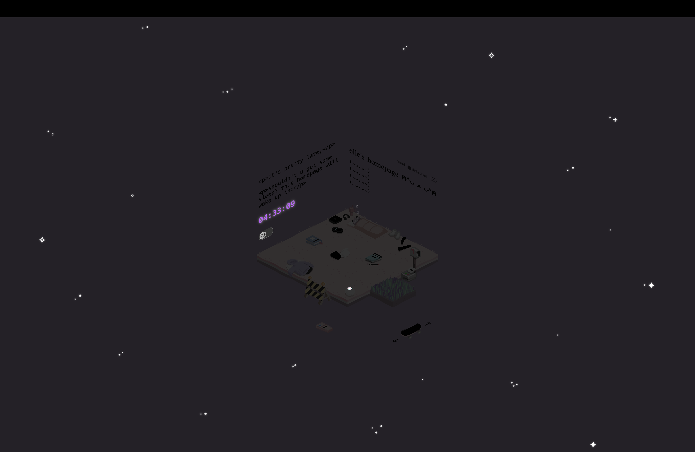
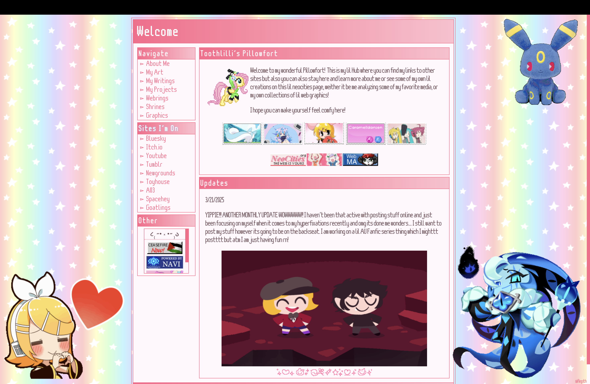
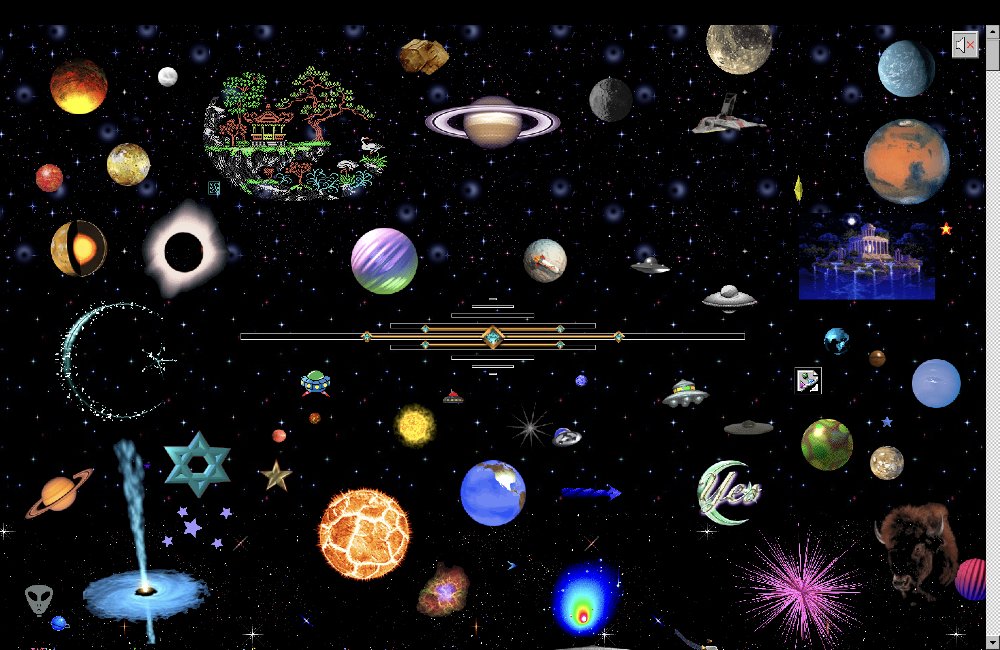
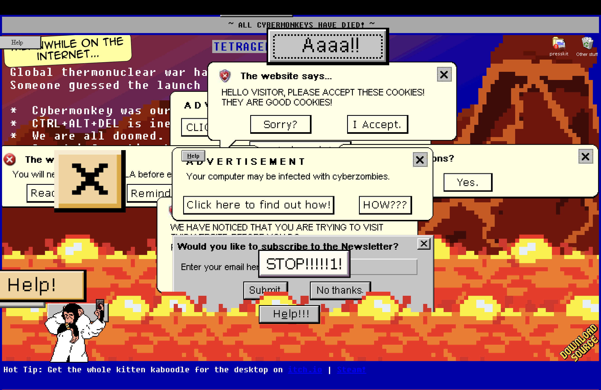

Featured Net Artworks
Goblin-Heart.net (2024) by SadGrl
Visit Goblin-Heart.net
An interactive personal website that has blog, library, and themed rooms are among the areas that visitors can explore after being welcomed by graphical art.
Elle’s Homepage (2025) by Elle
Visit Elle's Homepage A personal homepage with sections describing Elle's hobbies and projects, as well as links to her profiles on sites like Bluesky, Itch.io, and Tumblr, it acts as a central location for her online persona.
ToothLilli's Pillowfort (2025) by ToothLilli
Visit ToothLilli's Pillowfort A website that serves as the primary point of ToothLilli's internet activity, it has links to her profiles on many websites, including Bluesky, Itch.io, and Tumblr, as well as parts exhibiting her artwork, essays, and projects.
MelonLand (2024) by Melon aka Daniel
Visit MelonLand
A web project and online arts community celebrating the disordered appeal of the early web, virtual worlds, and personal homepages.
Cameron's World (2015) by Cameron Askin
Visit Cameron's World A tribute to the early days of personal web expression and the raw creativity of that era, this web collage is made up of text and images from archived GeoCities pages (1994–2009).
Tetrageddon (2020) by Nathalie Lawhead
Visit Tetrageddon Offering a strange and entertaining experience reminiscent of the anarchic charm of the early web, this interactive art project and web game collection embraces the aesthetics of early internet culture.